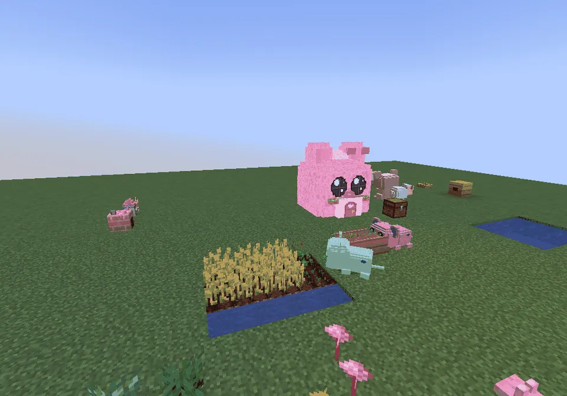

Guhs that live in a guh house do ten kinds of chores around it during the day.
Guhs die in een guhhuisje wonen doen overdag tien soorten klusjes rond hun huisje.
Tien klusjes
A busy yardEen druk erfje
Wheat, a pond, tuintjes, animals, a chest and a Bank Guh: everyone at work.Tarwe, een vijver, tuintjes, dieren, een kist en een Bank Guh: iedereen aan het werk.

Lampjes in the eveningLampjes 's avonds
The guhlampjes go on one by one.De guhlampjes gaan een voor een aan.
Residents do little chores around their huisje all by themselves, one after the other (with a tiny tool or what they carry floating above their head). Every chore gives hearts, a line in the dagboekje and a small sparkle. You choose per resident which chores it does in the huisje screen.
Bewoners doen helemaal zelf kleine klusjes rond hun huisje, de een na de ander (met een klein gereedschapje of wat ze dragen zwevend boven hun kopje). Elk klusje geeft hartjes, een regel in het dagboekje en een klein glinstertje. In het huisjesscherm kies je per bewoner welke klusjes hij doet.
| ChoreKlusje | WhoWie | What it doesWat het doet |
|---|---|---|
| 1. Kaasknabbels opgraven | guh, muisje | Digs in grass, dirt or sand in the area (the ground stays whole): mostly kaasknabbels, seeds or a schelpje, and sometimes something rare (gefrituurde knabbels, a marshmallow knabbel, a guh crystal, vahoege vads, the music disc).Graaft in gras, aarde of zand in de klus-area (de grond blijft heel): meestal kaasknabbels, zaadjes of een schelpje, en soms iets zeldzaams (gefrituurde knabbels, een marshmallowknabbel, een guhkristal, vahoege vads, de muziekplaat). |
| 2. Farmen | guh | Harvests ripe crops and replants them at once (wheat, carrots, potatoes, beetroot, kaasknabbelplantjes) and ripe guhtuintjes, up to 5 a trip. Nothing ripe? It waters thirsty tuintjes.Oogst rijpe gewassen en plant ze meteen opnieuw (tarwe, wortels, aardappels, bieten, kaasknabbelplantjes) en rijpe guhtuintjes, tot 5 per rondje. Niks rijp? Dan geeft hij dorstige tuintjes water. |
| 3. Opruimen & sorteren | guh, muisje | Picks up things lying around and brings them to the chest; with a Bank Guh in the area everything (also what's in the chest) gets sorted. Needs a chest or a Bank Guh.Raapt spulletjes op die rondslingeren en brengt ze naar de kist; staat er een Bank Guh in de klus-area, dan wordt alles gesorteerd (ook wat in de kist ligt). Nodig: een kist of een Bank Guh. |
| 4. Dieren & bijen verzorgen | guh | Pets and feeds guhschaapjes, knabbelkippetjes and guhkoeien (knabbelvoer from the chest), picks up wool and eggs, empties the kippennestjes, milks a happy guhkoe (kaasmelk, with an empty bottle) and harvests full knabbelkorven.Aait en voert guhschaapjes, knabbelkippetjes en guhkoeien (knabbelvoer uit de kist), raapt wol en eitjes op, haalt de kippennestjes leeg, melkt een blije guhkoe (kaasmelk, met een leeg flesje) en oogst volle knabbelkorven. |
| 5. Bakken & molen | guh | Carries knabbelgraan from the chest to a guh-molentje and the knabbelmeel back, and bakes in a knabbeloven when the chest has everything for a recipe (with knabbelmeel: twice as much).Brengt knabbelgraan uit de kist naar een guh-molentje en het knabbelmeel terug, en bakt in een knabbeloven als de kist alles voor een recept heeft (met knabbelmeel: dubbel zoveel). |
| 6. Vissen | guh, Schilly, Poepschilly | With a little pond (3+ water blocks) in the area it sits at the bank and catches guhvissen and schelpjes, and very rarely a Gouden Guhvis.Met een vijvertje (3+ waterblokjes) in de klus-area zit hij aan de kant en vangt guhvissen en schelpjes, en heel soms een Gouden Guhvis. |
| 7. Wachten & waarschuwen | guh (muisjes only peep)(muisjes piepen alleen) | A Mika or monster near the huisje? It peeps (a pink !), runs to you and warns you, and gently pushes Mikas away. It never fights and never hurts anyone. Always lief!Een Mika of monster bij het huisje? Hij piept (een roze !), rent naar je toe en waarschuwt je, en duwt Mika's heel zachtjes weg. Nooit vechten, nooit pijn doen. Altijd lief! |
| 8. Bloemetjes & bessen plukken | guh, muisje | Picks knabbelbessen and sweet berries (the bush stays) and a bloom from kaasbloemen and roze guhbloemen (the flower stays), and sometimes plants a new little flower.Plukt knabbelbessen en zoete bessen (de struik blijft) en een bloemetje van kaasbloemen en roze guhbloemen (de bloem blijft staan), en plant soms een nieuw bloemetje. |
| 9. Lampjes aan & uit | guh | In the evening it switches the guhlampjes and candles in the area on, in a little round; in the morning off again, with a big yawn.'s Avonds doet hij in een rondje de guhlampjes en kaarsjes in de klus-area aan; 's ochtends weer uit, met een grote gaap. |
| 10. Muisje-oppas & verzorgen | guh | Cuddles and feeds pieppiepmuisjes, Schilly and Poepschilly nearby, and a hurt tamed guh gets a snack from the chest (cupcake, koekje, kaasknabbels...) from a friend.Knuffelt en voert pieppiepmuisjes, Schilly en Poepschilly in de buurt, en een gewonde tamme guh krijgt van een vriendje een snackje uit de kist (cupcake, koekje, kaasknabbels...). |
At a glanceIn het kort
- AdvancementsVooruitgangen
- Graafguh · Boertje guh · Opgeruimd staat netjes · Lieve dierenoppas · Guh de bakker · Visje vangen · Waakguh · Bessenplukker · Lichtjes aan · Oppasguh · Alles op zijn plek · Kijk wat ik vond! · Klusjeskampioen · Honderd keer vads geholpen ★